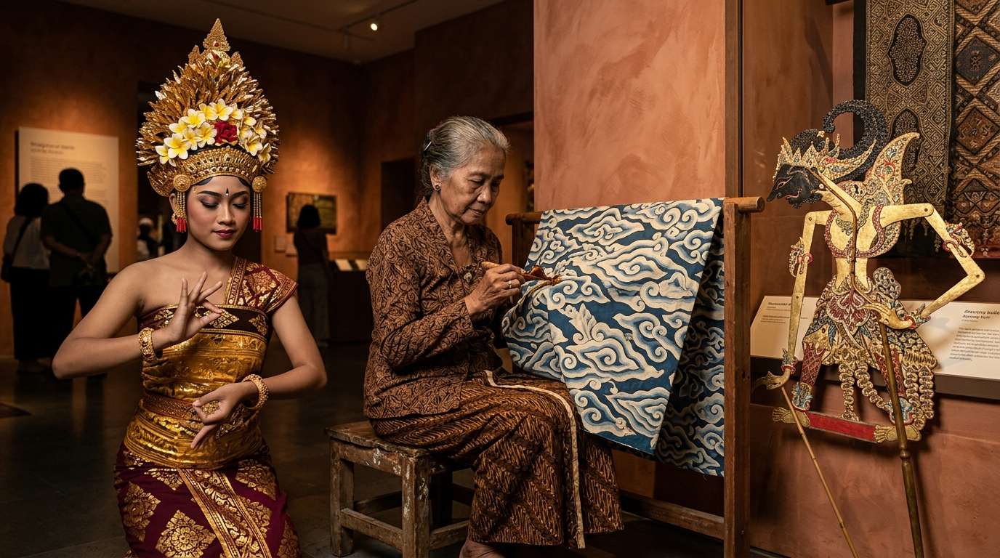

Menautkan Memori
Leluhur ke Ranah
Masa Depan.
AKSARA adalah museum digital interaktif yang merawat denyut peradaban kepulauan Nusantara. Menghidupkan kembali filosofi luhur, kriya adiluhung, ritus vernakular, dan seni pertunjukan melalui medium editorial kontemporer yang berakar pada kearifan Batik Megamendung.

Kebudayaan bukanlah fosil beku yang sekadar dipajang di etalase museum. Ia adalah mata air kehidupan, kompas moral, dan nafas peradaban yang harus terus mengalir menyejukkan akal budi manusia lintas zaman.
Tiga Nilai Adiluhung
Ketenangan Jiwa (Megamendung)
Menyerap ritme tujuh lapis awan Cirebon sebagai ajaran untuk senantiasa menahan amarah, bersikap bijaksana, dan menjadi penyejuk bagi sesama manusia.
Keselarasan Kosmik (Harmoni Alam)
Menghormati prinsip 'Alam Takambang Jadi Guru' dari Minang hingga 'Tri Hita Karana' di Bali, menyeimbangkan relasi manusia, alam raya, dan Sang Pencipta.
Preservasi Berkelanjutan
Mentransformasikan pengetahuan lisan dan kriya adiluhung ke dalam arsip digital interaktif agar tetap dihayati oleh generasi muda di era kecerdasan buatan.
Penjelajah Pusaka Nusantara
Nikmati interaksi galeri berbentuk kipas (fan-shaped gallery) yang terinspirasi oleh kelenturan kipas tradisi dan gerak awan berlapis. Klik atau geser kartu untuk menelaah rincian filosofi adiluhung setiap karya.
Jelajah Budaya 7 Wilayah Adat
Peta vektor asli Nusantara yang menghubungkan ruang geografis dengan pusaka adiluhung. Klik pada setiap gugus kepulauan untuk menyingkap kearifan lokal, filosofi hidup, dan warisan seni yang berakar kuat di tanah tersebut.
Menjaga Nyala Pusaka, Menautkan Kebangsaan
Warisan budaya kita bukanlah masa lalu yang membatu, melainkan api identitas yang menentukan arah masa depan bangsa. Di era disrupsi digital dan globalisasi yang serba cepat, melestarikan pusaka leluhur adalah wujud tertinggi dari kedaulatan moral kita.
Setiap kali kita memelajari filosofi Batik Megamendung, melantunkan nada Sasando, atau mengagumi kekompakan Tari Saman, kita tengah merajut kembali persatuan dalam keberagaman yang telah diwariskan ribuan tahun silam.

Janji Penjaga Pusaka
Torehkan nama Anda untuk menerima Piagam Resmi Digital Pelindung Pusaka Nusantara.